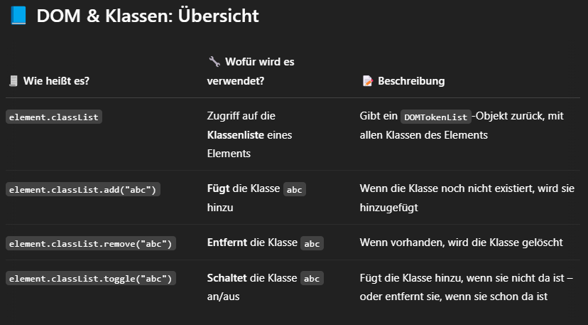
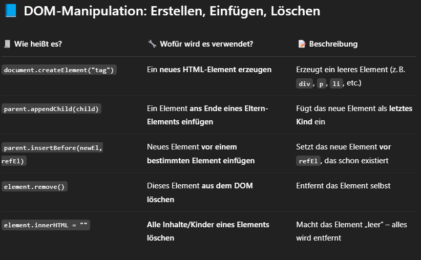
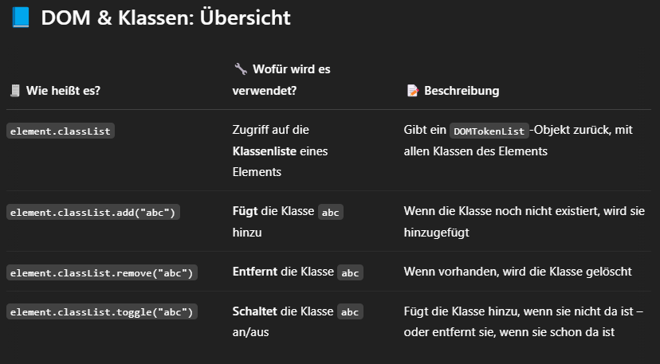
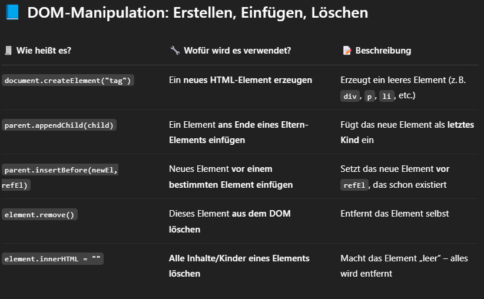
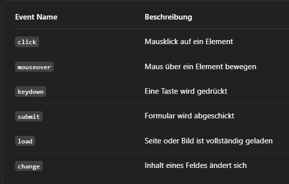
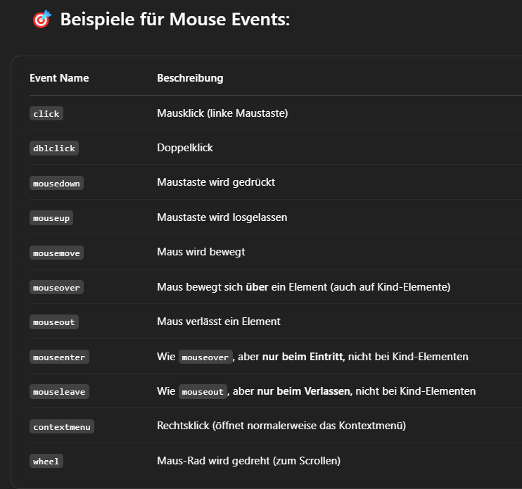
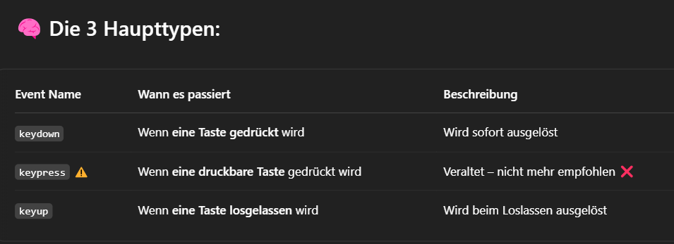

DOM
DOM steht für "Document Objekt Model"
Es handelt sich um eine Programmierschnittstelle (API) für HTML- und XML-Dokumente. Das DOM beschreibt die Struktur eines Dokuments als Baum von Knoten (Nodes), wobei jeder Knoten ein Element, ein Attribut oder einen Text repräsentiert. Dadurch können Webentwickler mit JavaScript die Struktur, das Styling und den Inhalt eines HTML-Dokuments dynamisch verändern.
Im DOM wird diese Seite als Baumstruktur dargestellt, in der jedes Element (wie html>, head>, h1>, p>) als Knoten existiert. Du kannst mit JavaScript auf diese Knoten zugreifen und sie verändern.
✅ Was du mit dem DOM bearbeiten kannst (im Detail)
Das DOM stellt die HTML-Seite als Baumstruktur dar. Jeder Teil dieser Seite (Tags, Text, Attribute) ist ein Knoten (Node). JavaScript kann diesen Baum lesen und manipulieren.
- Texte und HTML Inhalte ändern
- textContent = Nur Text
- innerHTML = Auch HTML möglich
- Elemente hinzufügen oder löschen
- Attribut bearbeiten
- CSS-Klassen und Styles verändern
- Events (Benutzerinteraktion)
Du kannst den sichtbaren Text oder sogar HTML-Strukturen innerhalb eines Elements verändern.

Mit DOM-Methoden kannst du neue HTML-Elemente erstellen und sie irgendwo im Dokument einfügen oder löschen.

Du kannst Attribute wie src, href, alt, id, usw. ändern oder abfragen.

Du kannst auf Klicks, Mausbewegungen, Tastendrücke etc. reagieren
🚫 Was du NICHT mit dem DOM machen kannst
- 1. ❌ Daten vom Server holen oder speichern
- ❌ Dateien auf dem Computer speichern
- ❌ CSS-Dateien direkt ändern
- ❌ Browserfunktionen wie Lesezeichen, Tabs, Sicherheitseinstellungen ändern
DOM ist nur für die Anzeige und Manipulation der Seite zuständig.
Für Serverzugriffe brauchst du:
Du kannst keine Datei auf dem Rechner des Nutzers schreiben oder in seine Ordner schauen. Dafür brauchst du Node.js, Downloads, oder File API, aber nicht direkt das DOM.
Du kannst Klassen hinzufügen oder Styles setzen – aber nicht den Inhalt einer CSS-Datei bearbeiten
Das geht alles nicht mit dem DOM, aus Sicherheitsgründen – du bist im sogenannten „Sandbox-Modus“.

 



Event
In JavaScript ist ein Event (Ereignis) eine Aktion, die im Browser passiert – oft durch den Benutzer ausgelöst. Beispiele sind:
- ein Klick auf einen Button
- das Laden einer Seite
- das Drücken einer Taste
- das Verändern eines Eingabefelds
- das Bewegen der Maus
Diese Events kannst du "abhören" und dann darauf reagieren, zum Beispiel mit einer Funktion.
Ein Event ist ein Auslöser, der eine Funktion starten kann.
Event-Handler
Ein Event Handler (deutsch: Ereignis-Handler) ist eine Funktion, die ausgeführt wird, wenn ein bestimmtes Event passiert.
Das Event ist z. B. ein Klick.
Der Handler ist die Funktion, die dann etwas ausführt (z. B. ein Popup zeigen).
Page Load Event
Das Page Load Event (Deutsch: Seiten-Lade-Ereignis) ist ein spezielles Event, das ausgelöst wird, wenn die komplette HTML-Seite mit allen Ressourcen geladen wurde.
Mouse Event
Ein Mouse Event in JavaScript ist ein Ereignis, das durch die Benutzung der Maus ausgelöst wird – also Klicken, Bewegen, Loslassen, Scrollen, usw.
Keyboard-Event
Ein Keyboard Event wird ausgelöst, wenn der Benutzer eine Taste auf der Tastatur drückt oder loslässt. JavaScript kann dann darauf reagieren – z. B. prüfen, welche Taste gedrückt wurde.
event.key / event.code
🧠 event.code = die Taste an einer bestimmten Stelle, egal was draufsteht
🧠 event.key = das Zeichen, das der Benutzer wirklich getippt hat
Form Submmit
Ein Form Submit ist ein Formularereignis in HTML und JavaScript, das ausgelöst wird, wenn der Benutzer ein Formular absendet – sei es durch Drücken eines „Absenden“-Buttons oder durch die Eingabetaste.
Ein Formular besteht aus verschiedenen Eingabefeldern (z. B. Textfelder, Checkboxen, Radiobuttons), und wenn der Benutzer auf den „Absenden“-Button klickt oder Enter drückt, wird das Formular an den Server geschickt (oder auch an ein anderes Ziel, wie eine API).
preventDefault()
Die preventDefault() Funktion ist eine Methode, die du in JavaScript auf ein Event-Objekt anwenden kannst, um das Standardverhalten eines Events zu verhindern.
🔧 Wofür wird preventDefault() verwendet?
Viele HTML-Elemente haben ein voreingestelltes Verhalten. Zum Beispiel:
- Ein Link () leitet beim Klick auf eine neue Seite weiter.
- Ein Formular (
- Beim Ziehen und Ablegen wird eventuell etwas ungewollt bewegt.
➡️ Mit preventDefault() kannst du genau dieses Verhalten unterdrücken, um eigene Logik zu verwenden.
🎓 Side Fact: Unterschied zu stopPropagation()?
- preventDefault() → Verhindert das Standardverhalten.
- stopPropagation() → Verhindert, dass das Event weiter die DOM-Hierarchie hochwandert.